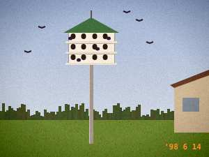

Ed's
Purple Martin Page
from the back yard on Rt. 3, Norwalk, Ohio
Welcome!!

My name is Ed and I have been a rural carrier for the Postal Service going on 27 years. In the spring of 1997 my wife Joyce bought me a 12 room martin house for my birthday and I put it up on a pole out back between the garage and the garden. That first year we got NOTHING but house sparrows and I about gave up. In 1998 the martins came back and found it and we had 4 pairs nesting and 17 babies fledge. I was hooked.This page is mostly so I can keep my records all in one place and so my brother in Erie can see how the birds are doing without me having to call long distance every week. My daughter Kim set it up for me at Christmas and I am still learning so bear with me.
If your a martin landlord too please sign my guestbook and tell me how YOUR colony is doing!
(Picture at left is the house last June with the birds
flying around it. Kim took it with the throw away camera so its not the
greatest.)
Colony Log
| Year | First scout seen | Pairs nesting | Eggs | Young fledged | Last ones left |
| 1997 | none | 0 | 0 | 0 | (sparrows!!) |
| 1998 | April 11 | 4 | 21 | 17 | Aug. 20 |
| 1999 | April 3 | 9 so far |
What's New
From last year:
8/20/98 - They're gone for the year. The yard is awful
quiet. See you in April.
7/9/98 - Lost one baby out of room 7, it fell out during
the storm Tuesday night. Put it back but it didn't make it.
6/14/98 - All 4 nests have babies. Took the picture today.
4/11/98 - THEY'RE HERE! A pair, and the male is chasing
sparrows off the porch.
Things I've Learned (the hard way)
Links
|
This site is a member of the Martin Landlords WebRing [Prev] [Random] [Next] [List Sites] |
martin fans since Feb. 1,
1999
Sign My Guestbook | Read My Guestbook
Last updated April 18, 1999